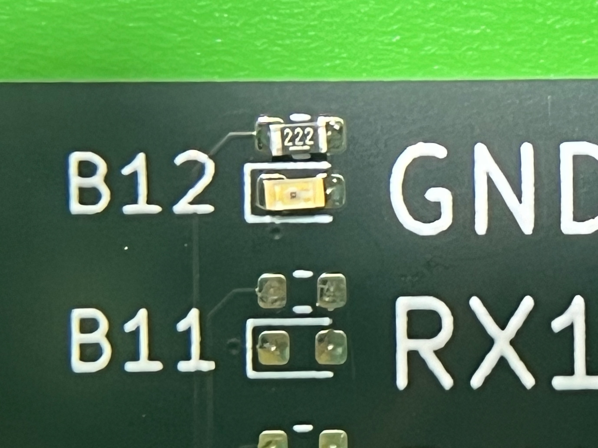

Anleitung zum USB Tester Löt Kit
Enthaltene Komponenten
- 1x pcb
- 2x USB Typ-C Buchse (teilweise schon an pcb angelötet)
- 1x USB Typ-A 3.0 Buchse
- 1x Micro USB Typ-B Buchse
- 1x Mini USB Typ-B Buchse
- 1x USB Typ-B 3.0 Buchse
- 1x Batterie Halterung
- 30x Widerstand 2.2kΩ (25 + 5 Reserve)
- 30x LEDs gelb (25 + 5 Reserve)
- 1x Kondensator 10μF
Anleitung
-
Löte die Widerstände und die LEDs auf die Platine, die oberen Kontakte sind für die Widerstände und die
unteren für die LEDs
Wichtig: die LEDs haben eine Ausrichtung!
Auf der Rückseite der LED sieht man eine Markierung für die Kontakte. Der Kontakt mit dem Kreuz ist der Minuspol
und muss an den linken Kontakt der Platine mit der vollständigen Umrandung gelötet werden.

Auf der Vorderseite ist die Unterscheidung der beiden Kontakte der LEDs leider nur schwer zu erkennen, aber der
Pluspol hat zwei kleine Streifen und der Minuspol nur einen.
12 LEDs + Widerstände sind für die linke Seite der Platine und 12 für die rechte Seite bestimmt. Das letze Paar
kommt unten in die linke Ecke der Platine bei der Aufschrift "SHIELD".
-
Löte die Buchsen auf die Platine. Anordnung siehe Bild. Für die Stecker auf der rechten Seite spielt es
keine Rolle, ob einzelne Kontakte sich untereinander berühren und einen Kurzschluss bilden.
Falls die USB-C Buchsen noch nicht angelötet sind, ist das der schwierigste Teil. Ich war am erfolgreichsten,
indem ich die mit Reflow-Löten angelötet habe.
-
Löte den Kondensator an die richtige Stelle neben dem Pluspol der Batterie. Die Ausrichtung spielt keine Rolle.
-
Löte die Batterie-Halterung an. Achte auf die richtige Polung! Es gibt eine kleine Markierung an der Ecke der
Halterung für den Plus- und Minuspol.
-
Und fertig ist dein USB Tester! Viel Spass beim Testen von USB-Kabeln!
Wie es auch überall steht, ist es wichtig, dass man
den Tester nicht an ein Gerät anschließt,
sondern nur Kabel!
Weitere Links
Hier gibt eine 3D-Druck-Vorlage für
ein kleines, einfaches Case.
Hier kann man das KiCad-Projekt zum
pcb finden. Ich habe das Original von alvarop etwas
angepasst, da einzelne Teile nicht mehr verfügbar waren. Eine aktuelle Liste gibt es hier
Erklärung zur Pin-Belegung
| Charge only |
GND |
VBUS |
| USB 2.0 |
GND |
VBUS |
D- |
D+ |
| USB 3.0 |
GND |
VBUS |
D- |
D+ |
RX- |
RX+ |
TX- |
TX+ |
Bei USB-C als Host (Buchse auf linker Seite) und Client (Buchse auf rechter Seite) leuchten beide Seiten, da dann
sowohl die A als auch die B Pins verbunden sind. Außerdem sollte mind. ein CC-Pin verbunden sein